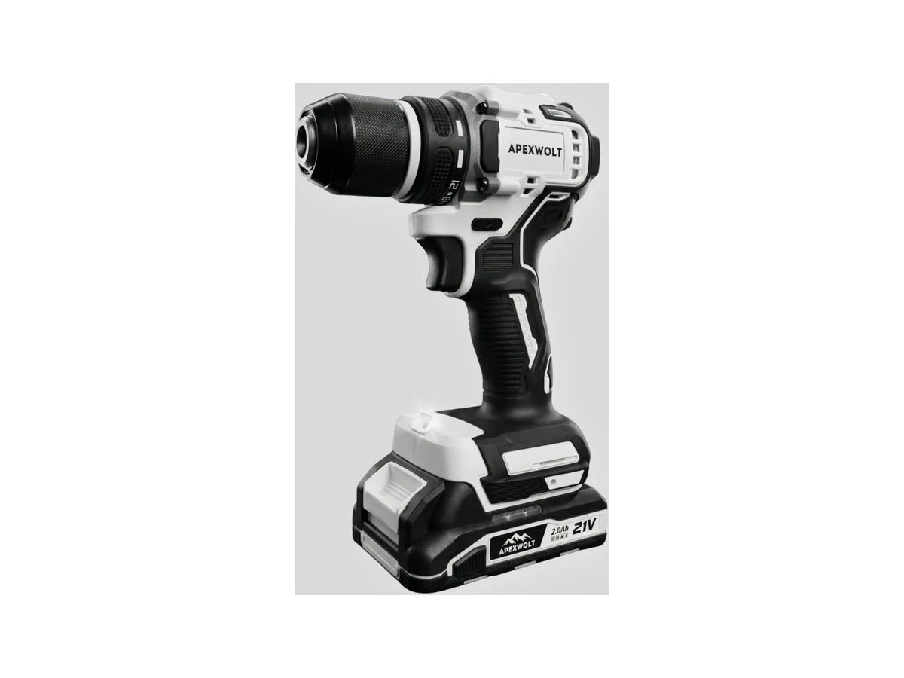
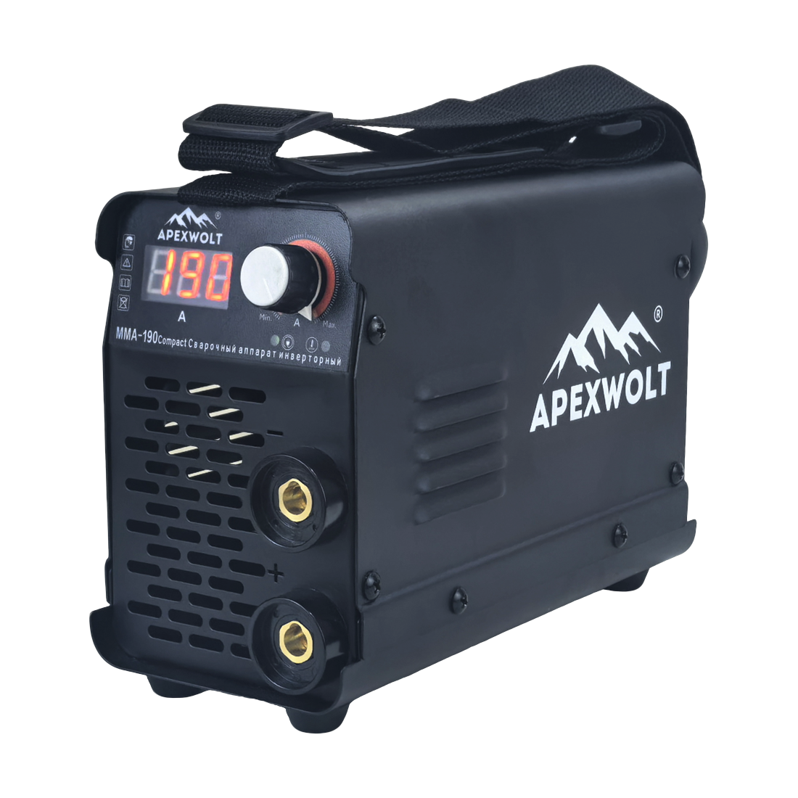
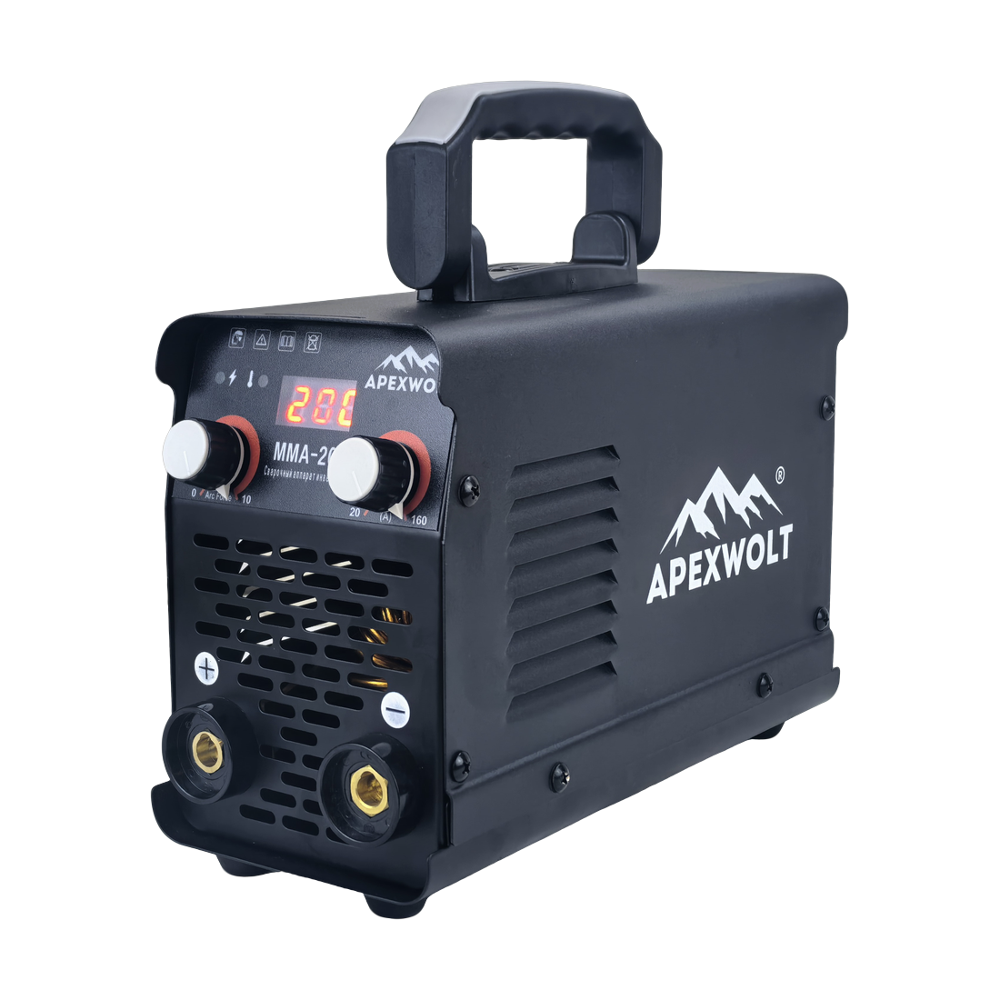
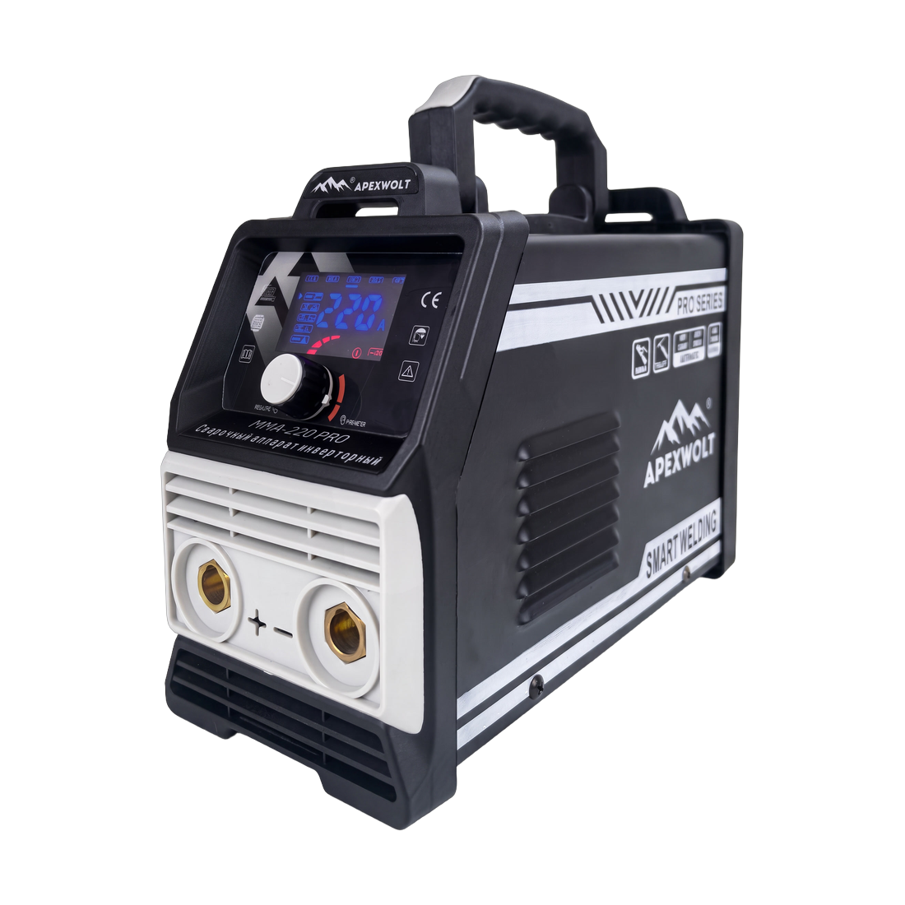
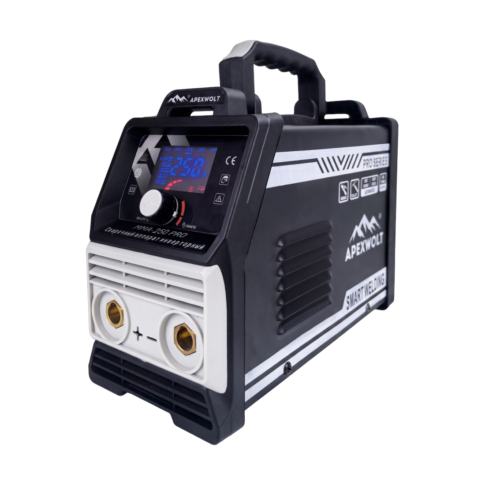
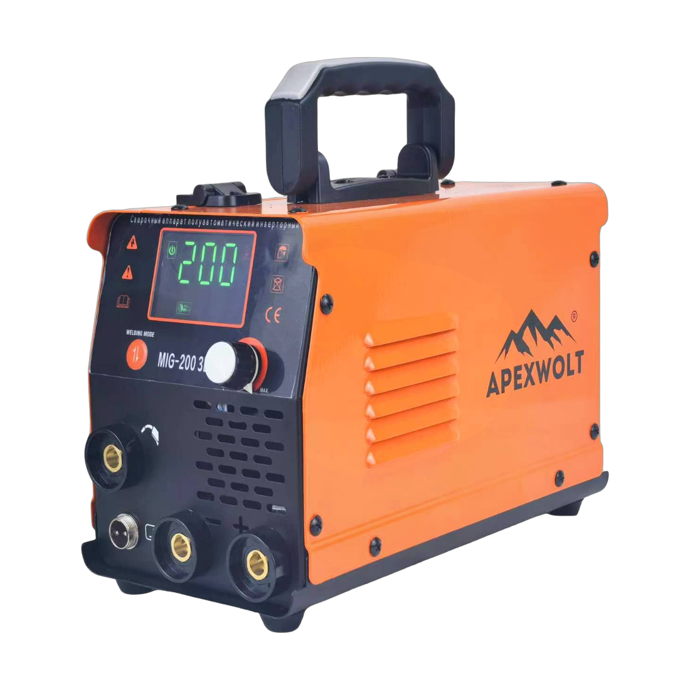
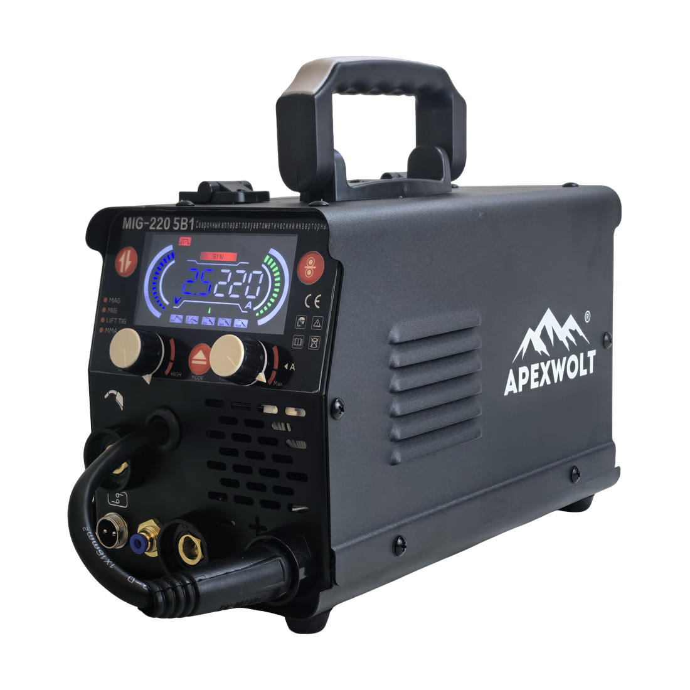
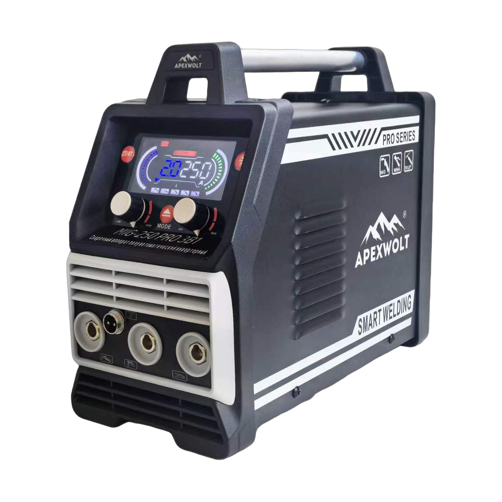
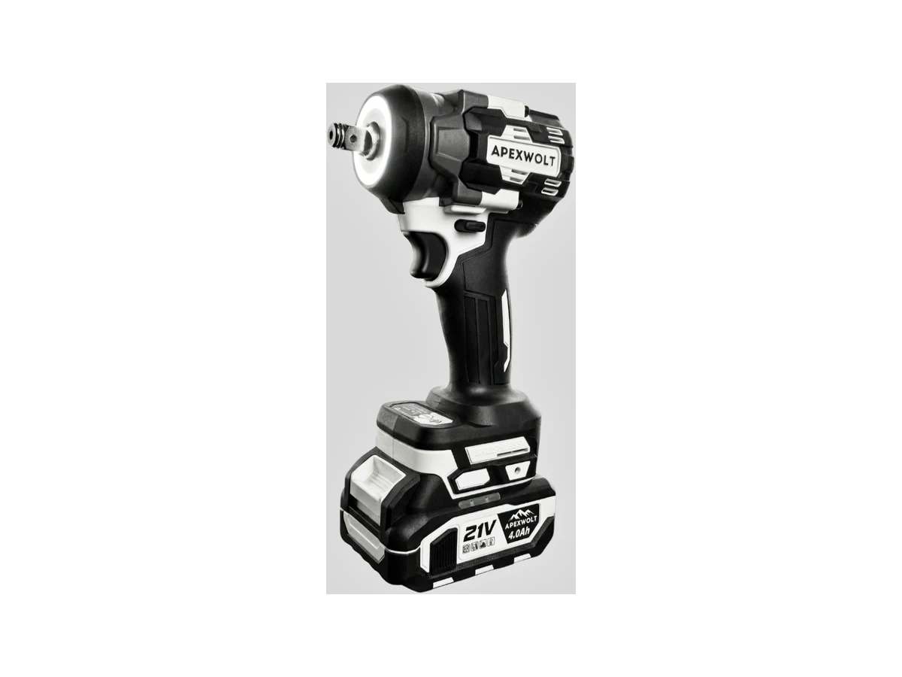
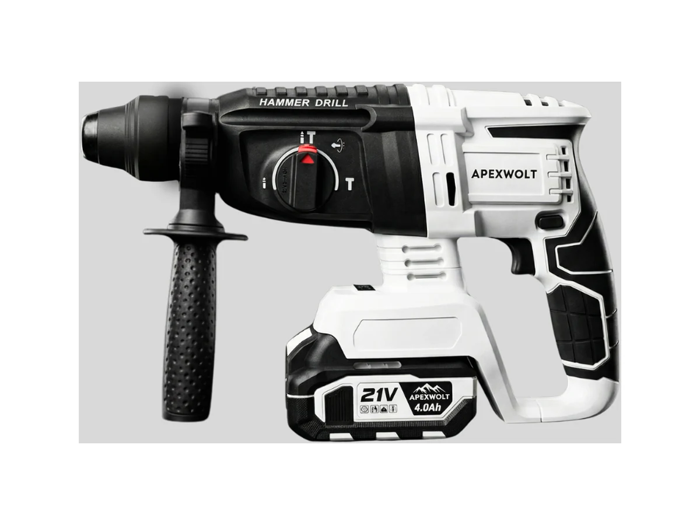

Артикул: 7/14/04
APEXWOLT / B2B-ПЛАТФОРМА
Каталог, актуальные остатки и заявки на закупку — в одном прозрачном процессе.
Каталог

APEXWOLT · 7/65/01 MMA-190 Compact Новинка
APEXWOLT · 7/65/02 MMA-200 Новинка
APEXWOLT · 7/65/03 MMA-220 PRO Новинка
APEXWOLT · 7/65/04 MMA-250 PRO Новинка
APEXWOLT · 7/65/05 MIG-200 3В1 Новинка
APEXWOLT · 7/65/06 MIG-220 5В1 Новинка
APEXWOLT · 7/65/07 MIG-250 PRO 3В1Шуруповёрты · 1 позиция

Артикул: 7/14/04

Артикул: 7/24/07

Артикул: 7/03/21
По заданным условиям ничего не найдено.
21V PLATFORM · PROFESSIONAL SERIES
Инструмент, оснастка и комплектующие в одном контуре закупки.
Остатки, сроки и условия видны до отправки заявки.
Подбираем совместимые решения под вашу задачу.
Менеджер подтверждает состав, документы и дату отгрузки.
01 ПОДДЕРЖКА ПАРТНЁРОВ
Помогаем не только заказать товар, но и представить его покупателю, обучить команду и поддерживать продажи после первой поставки.
Показываем производственную базу и этапы выпуска: предоставляем фото- и видеоматериалы с реальных производственных площадок.
APEXWOLT предоставляет согласованный комплект для демонстрационной выкладки.
Один контакт по ассортименту, заявкам, документам и поставкам.
Карточки товара, ценники, каталоги и макеты для точки продаж.
Согласуем программу для сотрудников партнёра под формат и задачи вашей торговой команды.
Условия рассчитываются индивидуально и зависят от фактического объёма отгрузок.
02 БРЕНДЫ В ОДНОЙ ПОСТАВКЕ
Инструмент, оснастка, климатическая техника и крепёж собираются в одной заявке с единым менеджером и комплектом документов.
03 ВИДЕООБЗОРЫ
Короткие обзоры, тесты и инструкции помогают оценить инструмент до формирования заявки.
НАЧАТЬ РАБОТУ